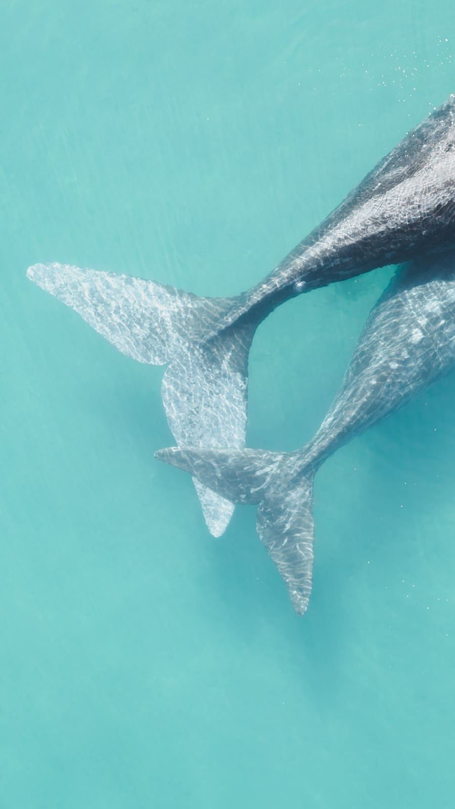

ArgentinaArgentina Costa PatagónicaPatagonian Coast Ballenas, pingüinos, elefantes marinos y aves de los golfos del Atlántico Sur.Whales, penguins, elephant seals and birds of the South Atlantic gulfs.Mirada Natural · El banco
Mirada Natural · The bank
Colecciones de imágenes
Image collections
Cada colección reúne más de cien fotografías de un mismo tema, seleccionadas y editadas. Las organizaciones aliadas acceden a todas sin costo; cómo sumarse.
Each collection brings together more than a hundred photographs on a single subject, selected and edited. Partner organisations access all of them at no cost; how to join.